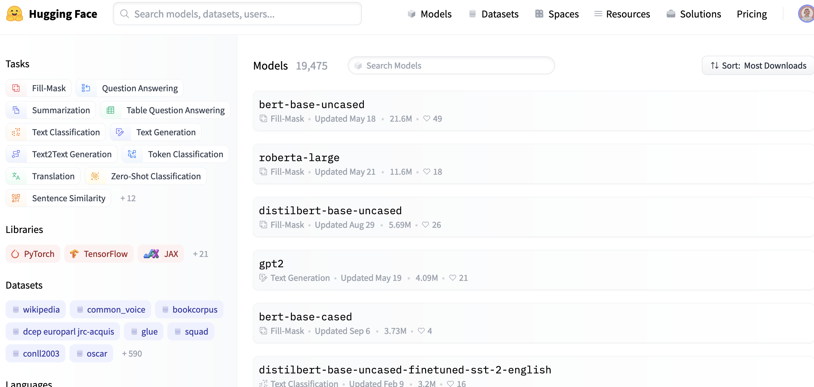

Using a Transformer Based Model¶
We now have a larger dataset to work with. We previously said we wouldn’t immediately jump to changing the model architecture we’re using to improve our results but now we have some work on exploring our previous models errors and increasing the size of our training data we might want to see if working with a different type of model architecture improves our performance.
Transformers¶
Transformer based models have made a massive impact on the Natural Language Processing world. [9]
We won’t dig into the deep details of how these architectures work here. If you want to learn more about how these models work there are lots of useful resources available including a free huggingface course. If you have a humanities background or interest you may also find the Bert for Humanists project useful.
One of the reasons we held of jumping straight to transformers is because of a more general concern with making sure we don’t see machine learning as a process of optimising a model architecture but rather a process of trying to think about, and potentially improve our data in combination with choosing a model and improving the training process.
The other slightly more practical reason we waited is that Transformer models are (in general) quite computationally expensive. If we are able to get sufficiently good performance using less computationally intensive methods then we might prefer to use those. With this said this can be overstated - again here we are not going to be training a model ‘from scratch’ (more on this shortly) but instead we will be fine-tuning an existing model. We can often do this with a single GPU and still get very good results.
The 🤗 ecosystem¶
Hugging Face is a company which has made a massive impact on the NLP landscape over the past couple of years. It is focused on helping “Build, train and deploy state of the art models powered by the reference open source in natural language”. One of the tools developed by Hugging Face is the transformers library. This library provides implementations of many transformer based models. This already provides us an easier way to access state of the art models without needing to implement and maintain them ourselves, however, one of the real benefits for us it the ability to use transformers in combination with models from the huggingface ‘model hub’.
The 🤗 model hub¶
We saw in previous notebooks how fine-tuning can be useful to reduce the amount of training data and compute resources we need to build a useful model. This, arguably, becomes even more important for transformer based models which can be expensive to train. The Hugging Face ‘model hub’ gives us access to a huge number of pre-trained models ranging trained for a large number of tasks on a growing number of languages.
This means we can potentially find a model that already does something we want, or close to what we want. If we aren’t lucky enough to find the exact model we need we can often find a model which will still work well on our task.
We’ll shortly see how we can also contribute to this model hub.
blurr¶
There are different ways we could use the transformers library. Since we already used fastai library in earlier parts of this notebook it might be nice to stick to this an API which is close to the fastai library. Fortunately for us blurr gives us exactly this blurr is a
Install requirements¶
!pip install git+https://github.com/ohmeow/blurr.git
Collecting git+https://github.com/ohmeow/blurr.git
Cloning https://github.com/ohmeow/blurr.git to /tmp/pip-req-build-r8_9rr9w
Running command git clone -q https://github.com/ohmeow/blurr.git /tmp/pip-req-build-r8_9rr9w
Requirement already satisfied: torch<2.0.0,>=1.7.0 in /usr/local/lib/python3.7/dist-packages (from ohmeow-blurr==0.1.2) (1.10.0+cu111)
Requirement already satisfied: fastai>=2.4 in /usr/local/lib/python3.7/dist-packages (from ohmeow-blurr==0.1.2) (2.5.3)
Requirement already satisfied: transformers>=4.6 in /usr/local/lib/python3.7/dist-packages (from ohmeow-blurr==0.1.2) (4.12.5)
Requirement already satisfied: datasets in /usr/local/lib/python3.7/dist-packages (from ohmeow-blurr==0.1.2) (1.16.1)
Requirement already satisfied: sentencepiece in /usr/local/lib/python3.7/dist-packages (from ohmeow-blurr==0.1.2) (0.1.96)
Requirement already satisfied: seqeval in /usr/local/lib/python3.7/dist-packages (from ohmeow-blurr==0.1.2) (1.2.2)
Requirement already satisfied: rouge-score in /usr/local/lib/python3.7/dist-packages (from ohmeow-blurr==0.1.2) (0.0.4)
Requirement already satisfied: nbdev<2.0.0,>=1.1.0 in /usr/local/lib/python3.7/dist-packages (from ohmeow-blurr==0.1.2) (1.1.23)
Requirement already satisfied: packaging in /usr/local/lib/python3.7/dist-packages (from fastai>=2.4->ohmeow-blurr==0.1.2) (21.3)
Requirement already satisfied: pandas in /usr/local/lib/python3.7/dist-packages (from fastai>=2.4->ohmeow-blurr==0.1.2) (1.1.5)
Requirement already satisfied: fastcore<1.4,>=1.3.22 in /usr/local/lib/python3.7/dist-packages (from fastai>=2.4->ohmeow-blurr==0.1.2) (1.3.27)
Requirement already satisfied: torchvision>=0.8.2 in /usr/local/lib/python3.7/dist-packages (from fastai>=2.4->ohmeow-blurr==0.1.2) (0.11.1+cu111)
Requirement already satisfied: fastprogress>=0.2.4 in /usr/local/lib/python3.7/dist-packages (from fastai>=2.4->ohmeow-blurr==0.1.2) (1.0.0)
Requirement already satisfied: scipy in /usr/local/lib/python3.7/dist-packages (from fastai>=2.4->ohmeow-blurr==0.1.2) (1.4.1)
Requirement already satisfied: pip in /usr/local/lib/python3.7/dist-packages (from fastai>=2.4->ohmeow-blurr==0.1.2) (21.1.3)
Requirement already satisfied: pyyaml in /usr/local/lib/python3.7/dist-packages (from fastai>=2.4->ohmeow-blurr==0.1.2) (6.0)
Requirement already satisfied: requests in /usr/local/lib/python3.7/dist-packages (from fastai>=2.4->ohmeow-blurr==0.1.2) (2.23.0)
Requirement already satisfied: scikit-learn in /usr/local/lib/python3.7/dist-packages (from fastai>=2.4->ohmeow-blurr==0.1.2) (1.0.1)
Requirement already satisfied: matplotlib in /usr/local/lib/python3.7/dist-packages (from fastai>=2.4->ohmeow-blurr==0.1.2) (3.2.2)
Requirement already satisfied: pillow>6.0.0 in /usr/local/lib/python3.7/dist-packages (from fastai>=2.4->ohmeow-blurr==0.1.2) (7.1.2)
Requirement already satisfied: fastdownload<2,>=0.0.5 in /usr/local/lib/python3.7/dist-packages (from fastai>=2.4->ohmeow-blurr==0.1.2) (0.0.5)
Requirement already satisfied: spacy<4 in /usr/local/lib/python3.7/dist-packages (from fastai>=2.4->ohmeow-blurr==0.1.2) (2.2.4)
Requirement already satisfied: numpy in /usr/local/lib/python3.7/dist-packages (from fastprogress>=0.2.4->fastai>=2.4->ohmeow-blurr==0.1.2) (1.19.5)
Requirement already satisfied: jupyter in /usr/local/lib/python3.7/dist-packages (from nbdev<2.0.0,>=1.1.0->ohmeow-blurr==0.1.2) (1.0.0)
Requirement already satisfied: nbformat>=4.4.0 in /usr/local/lib/python3.7/dist-packages (from nbdev<2.0.0,>=1.1.0->ohmeow-blurr==0.1.2) (5.1.3)
Requirement already satisfied: nbconvert<6 in /usr/local/lib/python3.7/dist-packages (from nbdev<2.0.0,>=1.1.0->ohmeow-blurr==0.1.2) (5.6.1)
Requirement already satisfied: jupyter-client<7.0 in /usr/local/lib/python3.7/dist-packages (from nbdev<2.0.0,>=1.1.0->ohmeow-blurr==0.1.2) (5.3.5)
Requirement already satisfied: fastrelease in /usr/local/lib/python3.7/dist-packages (from nbdev<2.0.0,>=1.1.0->ohmeow-blurr==0.1.2) (0.1.12)
Requirement already satisfied: ipykernel in /usr/local/lib/python3.7/dist-packages (from nbdev<2.0.0,>=1.1.0->ohmeow-blurr==0.1.2) (4.10.1)
Requirement already satisfied: ghapi in /usr/local/lib/python3.7/dist-packages (from nbdev<2.0.0,>=1.1.0->ohmeow-blurr==0.1.2) (0.1.19)
Requirement already satisfied: traitlets in /usr/local/lib/python3.7/dist-packages (from jupyter-client<7.0->nbdev<2.0.0,>=1.1.0->ohmeow-blurr==0.1.2) (5.1.1)
Requirement already satisfied: tornado>=4.1 in /usr/local/lib/python3.7/dist-packages (from jupyter-client<7.0->nbdev<2.0.0,>=1.1.0->ohmeow-blurr==0.1.2) (5.1.1)
Requirement already satisfied: jupyter-core>=4.6.0 in /usr/local/lib/python3.7/dist-packages (from jupyter-client<7.0->nbdev<2.0.0,>=1.1.0->ohmeow-blurr==0.1.2) (4.9.1)
Requirement already satisfied: pyzmq>=13 in /usr/local/lib/python3.7/dist-packages (from jupyter-client<7.0->nbdev<2.0.0,>=1.1.0->ohmeow-blurr==0.1.2) (22.3.0)
Requirement already satisfied: python-dateutil>=2.1 in /usr/local/lib/python3.7/dist-packages (from jupyter-client<7.0->nbdev<2.0.0,>=1.1.0->ohmeow-blurr==0.1.2) (2.8.2)
Requirement already satisfied: pandocfilters>=1.4.1 in /usr/local/lib/python3.7/dist-packages (from nbconvert<6->nbdev<2.0.0,>=1.1.0->ohmeow-blurr==0.1.2) (1.5.0)
Requirement already satisfied: testpath in /usr/local/lib/python3.7/dist-packages (from nbconvert<6->nbdev<2.0.0,>=1.1.0->ohmeow-blurr==0.1.2) (0.5.0)
Requirement already satisfied: bleach in /usr/local/lib/python3.7/dist-packages (from nbconvert<6->nbdev<2.0.0,>=1.1.0->ohmeow-blurr==0.1.2) (4.1.0)
Requirement already satisfied: mistune<2,>=0.8.1 in /usr/local/lib/python3.7/dist-packages (from nbconvert<6->nbdev<2.0.0,>=1.1.0->ohmeow-blurr==0.1.2) (0.8.4)
Requirement already satisfied: defusedxml in /usr/local/lib/python3.7/dist-packages (from nbconvert<6->nbdev<2.0.0,>=1.1.0->ohmeow-blurr==0.1.2) (0.7.1)
Requirement already satisfied: pygments in /usr/local/lib/python3.7/dist-packages (from nbconvert<6->nbdev<2.0.0,>=1.1.0->ohmeow-blurr==0.1.2) (2.6.1)
Requirement already satisfied: entrypoints>=0.2.2 in /usr/local/lib/python3.7/dist-packages (from nbconvert<6->nbdev<2.0.0,>=1.1.0->ohmeow-blurr==0.1.2) (0.3)
Requirement already satisfied: jinja2>=2.4 in /usr/local/lib/python3.7/dist-packages (from nbconvert<6->nbdev<2.0.0,>=1.1.0->ohmeow-blurr==0.1.2) (2.11.3)
Requirement already satisfied: MarkupSafe>=0.23 in /usr/local/lib/python3.7/dist-packages (from jinja2>=2.4->nbconvert<6->nbdev<2.0.0,>=1.1.0->ohmeow-blurr==0.1.2) (2.0.1)
Requirement already satisfied: ipython-genutils in /usr/local/lib/python3.7/dist-packages (from nbformat>=4.4.0->nbdev<2.0.0,>=1.1.0->ohmeow-blurr==0.1.2) (0.2.0)
Requirement already satisfied: jsonschema!=2.5.0,>=2.4 in /usr/local/lib/python3.7/dist-packages (from nbformat>=4.4.0->nbdev<2.0.0,>=1.1.0->ohmeow-blurr==0.1.2) (2.6.0)
Requirement already satisfied: six>=1.5 in /usr/local/lib/python3.7/dist-packages (from python-dateutil>=2.1->jupyter-client<7.0->nbdev<2.0.0,>=1.1.0->ohmeow-blurr==0.1.2) (1.15.0)
Requirement already satisfied: blis<0.5.0,>=0.4.0 in /usr/local/lib/python3.7/dist-packages (from spacy<4->fastai>=2.4->ohmeow-blurr==0.1.2) (0.4.1)
Requirement already satisfied: catalogue<1.1.0,>=0.0.7 in /usr/local/lib/python3.7/dist-packages (from spacy<4->fastai>=2.4->ohmeow-blurr==0.1.2) (1.0.0)
Requirement already satisfied: murmurhash<1.1.0,>=0.28.0 in /usr/local/lib/python3.7/dist-packages (from spacy<4->fastai>=2.4->ohmeow-blurr==0.1.2) (1.0.6)
Requirement already satisfied: plac<1.2.0,>=0.9.6 in /usr/local/lib/python3.7/dist-packages (from spacy<4->fastai>=2.4->ohmeow-blurr==0.1.2) (1.1.3)
Requirement already satisfied: cymem<2.1.0,>=2.0.2 in /usr/local/lib/python3.7/dist-packages (from spacy<4->fastai>=2.4->ohmeow-blurr==0.1.2) (2.0.6)
Requirement already satisfied: tqdm<5.0.0,>=4.38.0 in /usr/local/lib/python3.7/dist-packages (from spacy<4->fastai>=2.4->ohmeow-blurr==0.1.2) (4.62.3)
Requirement already satisfied: setuptools in /usr/local/lib/python3.7/dist-packages (from spacy<4->fastai>=2.4->ohmeow-blurr==0.1.2) (57.4.0)
Requirement already satisfied: wasabi<1.1.0,>=0.4.0 in /usr/local/lib/python3.7/dist-packages (from spacy<4->fastai>=2.4->ohmeow-blurr==0.1.2) (0.8.2)
Requirement already satisfied: preshed<3.1.0,>=3.0.2 in /usr/local/lib/python3.7/dist-packages (from spacy<4->fastai>=2.4->ohmeow-blurr==0.1.2) (3.0.6)
Requirement already satisfied: srsly<1.1.0,>=1.0.2 in /usr/local/lib/python3.7/dist-packages (from spacy<4->fastai>=2.4->ohmeow-blurr==0.1.2) (1.0.5)
Requirement already satisfied: thinc==7.4.0 in /usr/local/lib/python3.7/dist-packages (from spacy<4->fastai>=2.4->ohmeow-blurr==0.1.2) (7.4.0)
Requirement already satisfied: importlib-metadata>=0.20 in /usr/local/lib/python3.7/dist-packages (from catalogue<1.1.0,>=0.0.7->spacy<4->fastai>=2.4->ohmeow-blurr==0.1.2) (4.8.2)
Requirement already satisfied: zipp>=0.5 in /usr/local/lib/python3.7/dist-packages (from importlib-metadata>=0.20->catalogue<1.1.0,>=0.0.7->spacy<4->fastai>=2.4->ohmeow-blurr==0.1.2) (3.6.0)
Requirement already satisfied: typing-extensions>=3.6.4 in /usr/local/lib/python3.7/dist-packages (from importlib-metadata>=0.20->catalogue<1.1.0,>=0.0.7->spacy<4->fastai>=2.4->ohmeow-blurr==0.1.2) (3.10.0.2)
Requirement already satisfied: idna<3,>=2.5 in /usr/local/lib/python3.7/dist-packages (from requests->fastai>=2.4->ohmeow-blurr==0.1.2) (2.10)
Requirement already satisfied: urllib3!=1.25.0,!=1.25.1,<1.26,>=1.21.1 in /usr/local/lib/python3.7/dist-packages (from requests->fastai>=2.4->ohmeow-blurr==0.1.2) (1.24.3)
Requirement already satisfied: certifi>=2017.4.17 in /usr/local/lib/python3.7/dist-packages (from requests->fastai>=2.4->ohmeow-blurr==0.1.2) (2021.10.8)
Requirement already satisfied: chardet<4,>=3.0.2 in /usr/local/lib/python3.7/dist-packages (from requests->fastai>=2.4->ohmeow-blurr==0.1.2) (3.0.4)
Requirement already satisfied: sacremoses in /usr/local/lib/python3.7/dist-packages (from transformers>=4.6->ohmeow-blurr==0.1.2) (0.0.46)
Requirement already satisfied: filelock in /usr/local/lib/python3.7/dist-packages (from transformers>=4.6->ohmeow-blurr==0.1.2) (3.4.0)
Requirement already satisfied: regex!=2019.12.17 in /usr/local/lib/python3.7/dist-packages (from transformers>=4.6->ohmeow-blurr==0.1.2) (2019.12.20)
Requirement already satisfied: tokenizers<0.11,>=0.10.1 in /usr/local/lib/python3.7/dist-packages (from transformers>=4.6->ohmeow-blurr==0.1.2) (0.10.3)
Requirement already satisfied: huggingface-hub<1.0,>=0.1.0 in /usr/local/lib/python3.7/dist-packages (from transformers>=4.6->ohmeow-blurr==0.1.2) (0.2.0)
Requirement already satisfied: pyparsing!=3.0.5,>=2.0.2 in /usr/local/lib/python3.7/dist-packages (from packaging->fastai>=2.4->ohmeow-blurr==0.1.2) (3.0.6)
Requirement already satisfied: webencodings in /usr/local/lib/python3.7/dist-packages (from bleach->nbconvert<6->nbdev<2.0.0,>=1.1.0->ohmeow-blurr==0.1.2) (0.5.1)
Requirement already satisfied: xxhash in /usr/local/lib/python3.7/dist-packages (from datasets->ohmeow-blurr==0.1.2) (2.0.2)
Requirement already satisfied: aiohttp in /usr/local/lib/python3.7/dist-packages (from datasets->ohmeow-blurr==0.1.2) (3.8.1)
Requirement already satisfied: fsspec[http]>=2021.05.0 in /usr/local/lib/python3.7/dist-packages (from datasets->ohmeow-blurr==0.1.2) (2021.11.1)
Requirement already satisfied: dill in /usr/local/lib/python3.7/dist-packages (from datasets->ohmeow-blurr==0.1.2) (0.3.4)
Requirement already satisfied: pyarrow!=4.0.0,>=3.0.0 in /usr/local/lib/python3.7/dist-packages (from datasets->ohmeow-blurr==0.1.2) (3.0.0)
Requirement already satisfied: multiprocess in /usr/local/lib/python3.7/dist-packages (from datasets->ohmeow-blurr==0.1.2) (0.70.12.2)
Requirement already satisfied: asynctest==0.13.0 in /usr/local/lib/python3.7/dist-packages (from aiohttp->datasets->ohmeow-blurr==0.1.2) (0.13.0)
Requirement already satisfied: frozenlist>=1.1.1 in /usr/local/lib/python3.7/dist-packages (from aiohttp->datasets->ohmeow-blurr==0.1.2) (1.2.0)
Requirement already satisfied: async-timeout<5.0,>=4.0.0a3 in /usr/local/lib/python3.7/dist-packages (from aiohttp->datasets->ohmeow-blurr==0.1.2) (4.0.1)
Requirement already satisfied: yarl<2.0,>=1.0 in /usr/local/lib/python3.7/dist-packages (from aiohttp->datasets->ohmeow-blurr==0.1.2) (1.7.2)
Requirement already satisfied: multidict<7.0,>=4.5 in /usr/local/lib/python3.7/dist-packages (from aiohttp->datasets->ohmeow-blurr==0.1.2) (5.2.0)
Requirement already satisfied: aiosignal>=1.1.2 in /usr/local/lib/python3.7/dist-packages (from aiohttp->datasets->ohmeow-blurr==0.1.2) (1.2.0)
Requirement already satisfied: charset-normalizer<3.0,>=2.0 in /usr/local/lib/python3.7/dist-packages (from aiohttp->datasets->ohmeow-blurr==0.1.2) (2.0.8)
Requirement already satisfied: attrs>=17.3.0 in /usr/local/lib/python3.7/dist-packages (from aiohttp->datasets->ohmeow-blurr==0.1.2) (21.2.0)
Requirement already satisfied: ipython>=4.0.0 in /usr/local/lib/python3.7/dist-packages (from ipykernel->nbdev<2.0.0,>=1.1.0->ohmeow-blurr==0.1.2) (5.5.0)
Requirement already satisfied: pexpect in /usr/local/lib/python3.7/dist-packages (from ipython>=4.0.0->ipykernel->nbdev<2.0.0,>=1.1.0->ohmeow-blurr==0.1.2) (4.8.0)
Requirement already satisfied: simplegeneric>0.8 in /usr/local/lib/python3.7/dist-packages (from ipython>=4.0.0->ipykernel->nbdev<2.0.0,>=1.1.0->ohmeow-blurr==0.1.2) (0.8.1)
Requirement already satisfied: decorator in /usr/local/lib/python3.7/dist-packages (from ipython>=4.0.0->ipykernel->nbdev<2.0.0,>=1.1.0->ohmeow-blurr==0.1.2) (4.4.2)
Requirement already satisfied: prompt-toolkit<2.0.0,>=1.0.4 in /usr/local/lib/python3.7/dist-packages (from ipython>=4.0.0->ipykernel->nbdev<2.0.0,>=1.1.0->ohmeow-blurr==0.1.2) (1.0.18)
Requirement already satisfied: pickleshare in /usr/local/lib/python3.7/dist-packages (from ipython>=4.0.0->ipykernel->nbdev<2.0.0,>=1.1.0->ohmeow-blurr==0.1.2) (0.7.5)
Requirement already satisfied: wcwidth in /usr/local/lib/python3.7/dist-packages (from prompt-toolkit<2.0.0,>=1.0.4->ipython>=4.0.0->ipykernel->nbdev<2.0.0,>=1.1.0->ohmeow-blurr==0.1.2) (0.2.5)
Requirement already satisfied: ipywidgets in /usr/local/lib/python3.7/dist-packages (from jupyter->nbdev<2.0.0,>=1.1.0->ohmeow-blurr==0.1.2) (7.6.5)
Requirement already satisfied: qtconsole in /usr/local/lib/python3.7/dist-packages (from jupyter->nbdev<2.0.0,>=1.1.0->ohmeow-blurr==0.1.2) (5.2.1)
Requirement already satisfied: notebook in /usr/local/lib/python3.7/dist-packages (from jupyter->nbdev<2.0.0,>=1.1.0->ohmeow-blurr==0.1.2) (5.3.1)
Requirement already satisfied: jupyter-console in /usr/local/lib/python3.7/dist-packages (from jupyter->nbdev<2.0.0,>=1.1.0->ohmeow-blurr==0.1.2) (5.2.0)
Requirement already satisfied: jupyterlab-widgets>=1.0.0 in /usr/local/lib/python3.7/dist-packages (from ipywidgets->jupyter->nbdev<2.0.0,>=1.1.0->ohmeow-blurr==0.1.2) (1.0.2)
Requirement already satisfied: widgetsnbextension~=3.5.0 in /usr/local/lib/python3.7/dist-packages (from ipywidgets->jupyter->nbdev<2.0.0,>=1.1.0->ohmeow-blurr==0.1.2) (3.5.2)
Requirement already satisfied: Send2Trash in /usr/local/lib/python3.7/dist-packages (from notebook->jupyter->nbdev<2.0.0,>=1.1.0->ohmeow-blurr==0.1.2) (1.8.0)
Requirement already satisfied: terminado>=0.8.1 in /usr/local/lib/python3.7/dist-packages (from notebook->jupyter->nbdev<2.0.0,>=1.1.0->ohmeow-blurr==0.1.2) (0.12.1)
Requirement already satisfied: ptyprocess in /usr/local/lib/python3.7/dist-packages (from terminado>=0.8.1->notebook->jupyter->nbdev<2.0.0,>=1.1.0->ohmeow-blurr==0.1.2) (0.7.0)
Requirement already satisfied: kiwisolver>=1.0.1 in /usr/local/lib/python3.7/dist-packages (from matplotlib->fastai>=2.4->ohmeow-blurr==0.1.2) (1.3.2)
Requirement already satisfied: cycler>=0.10 in /usr/local/lib/python3.7/dist-packages (from matplotlib->fastai>=2.4->ohmeow-blurr==0.1.2) (0.11.0)
Requirement already satisfied: pytz>=2017.2 in /usr/local/lib/python3.7/dist-packages (from pandas->fastai>=2.4->ohmeow-blurr==0.1.2) (2018.9)
Requirement already satisfied: qtpy in /usr/local/lib/python3.7/dist-packages (from qtconsole->jupyter->nbdev<2.0.0,>=1.1.0->ohmeow-blurr==0.1.2) (1.11.2)
Requirement already satisfied: absl-py in /usr/local/lib/python3.7/dist-packages (from rouge-score->ohmeow-blurr==0.1.2) (0.12.0)
Requirement already satisfied: nltk in /usr/local/lib/python3.7/dist-packages (from rouge-score->ohmeow-blurr==0.1.2) (3.2.5)
Requirement already satisfied: joblib in /usr/local/lib/python3.7/dist-packages (from sacremoses->transformers>=4.6->ohmeow-blurr==0.1.2) (1.1.0)
Requirement already satisfied: click in /usr/local/lib/python3.7/dist-packages (from sacremoses->transformers>=4.6->ohmeow-blurr==0.1.2) (7.1.2)
Requirement already satisfied: threadpoolctl>=2.0.0 in /usr/local/lib/python3.7/dist-packages (from scikit-learn->fastai>=2.4->ohmeow-blurr==0.1.2) (3.0.0)
Imports¶
import pandas as pd
import torch
from transformers import *
from fastai.text.all import *
from blurr.data.all import *
from blurr.modeling.all import *
Loading our Training Data¶
We’ll load the data we created previously using our labelling functions/snorkel.
df = pd.read_csv("snorkel_train.csv")
Preparing our Data¶
Some of this will look fairly familiar from the previous but there is a little bit more ‘housekeeping’ to do now. We’ll briefly explain what is happening in this different stages.
First we create a variable which just stores the number of labels we could have. This is a bit redundant here since we know it’s two but we might not always remember how many labels we have.
n_labels = len(df["snorkel_genre"].unique())
n_labels
2
We now need to specify the type of model we want to use. We want to do text classification, which is also known as ‘sequence classification’. We use the Transformers libraries Auto Classes to do a lot of the setup work of creating a model for the task we want to do (text classifcation) using a particular model architecture. This makes it very easy to swap the model we use without having to change our code.
model_cls = AutoModelForSequenceClassification
We now pass in the name of the model we want to use as our initial pre-trained model. We could choose from many of the models in the huggingface hub to serve as the starting point for our new transformer based model. In this case we choose ‘distilbert-base-cased’, this is a lighter version of Bert which is slightly less computationally expensive to train, we also use a ‘cased’ model. This means that “Dog” is different to “dog”, since we have relatively short sequences of text and capitalisation is often important in a book title our intuition was that this model might work a little better than an uncased model.
pretrained_model_name = "distilbert-base-cased"
config = AutoConfig.from_pretrained(pretrained_model_name)
config.num_labels = n_labels
We now use a blur method get_hf_objects to get all of the various components of our model (tokenizer, etc.)
hf_arch, hf_config, hf_tokenizer, hf_model = BLURR.get_hf_objects(
pretrained_model_name, model_cls=model_cls, config=config
)
We now load our data
blocks = (HF_TextBlock(hf_arch, hf_config, hf_tokenizer, hf_model), CategoryBlock)
dblock = DataBlock(
blocks=blocks,
get_x=ColReader("Title"),
get_y=ColReader("snorkel_genre"),
splitter=ColSplitter(),
)
dls = dblock.dataloaders(df, bs=16)
We can take a look at our data as we saw before
dls.show_batch(dataloaders=dls, max_n=2)
| text | target | |
|---|---|---|
| 0 | Los Héroes y las Maravillas del Mundo.... Anales del mundo desde los tiempos bíblicos hasta nuestros dias.... Gran Memorandum histórico... que comprende íntegras las obras siguientes. La Imparcial... Historia Universal, escrita por el sabio Benedictino Clemente y su tan celebrado Arte de comprobar los datos de las fechas históricas, crónicas y otros antiguos documentos ;... continuada hasta hoy dia por M. de Saint Allais ; la Historia de Alejandro el Grande, escrita por Quinto Curcio, la de Cártago y Roma, Anibal y los Escipiones, Pompeyo y Cesar, continuados los famosos Comentarios de este último ; la de la guerra de Yugurta y Catilina, trasladado íntegro todo el Salustio. La Historia de la guerra de los Judios contra los Romanos.... Descripcion del Capitolio, destruccion de Jerusalen, Martirio de los Macabeos, etc. escrita por Flavio Josefo, traducida del original Griego... acompañadas dichas historias con las fideles tablas cronológicas de la citada obra de Clemente.... Seguido todo de los tan celebrados cuadros de la pintura del hombre y de las maravillas que le rodean por... Buffon, Cuvier, Lacepede,... precedido del discurso sobre la Historia Universal por... Bossuet.... Dispuesto, ordenado, y completado el cuerpo general de la obra hasta el dia que termine por D. de Mora y Casarusa. Revisada la parte religiosa que comprende por I. Sayol y E | Non-fiction |
| 1 | Les Corte - Real et leurs voyages au Nouveau - Monde, d'après des documents nouveaux... tirés des archives de Lisbonne et de Modène. Suivi du texte inédit d'un récit de la troisième expédition de Gaspar Corte - Real et d'une importante carte nautique portugaise de l'année 1502 reproduite ici pour la première fois. Mémoire lu à l'Académie des inscriptions et belles - lettres, etc | Non-fiction |
Creating our Learner¶
We now create a fastai learner. This is a bit more verbose than previously because we specify an optimizer and don’t use the text_classifier_learner convenience function but directly use a fastai Learner class.
model = HF_BaseModelWrapper(hf_model)
learn = Learner(
dls,
model,
opt_func=partial(Adam, decouple_wd=True),
loss_func=CrossEntropyLossFlat(),
metrics=[F1Score(average="macro")],
cbs=[HF_BaseModelCallback],
splitter=hf_splitter,
).to_fp16()
learn.unfreeze()
As we saw before we can use the learning rate finder to help find a suitable learning rate
suggested = learn.lr_find(suggest_funcs=(minimum, steep, valley, slide))
Training our Model¶
We are now ready to train our model. We again set a high number of epochs but as we did before we set a callback to stop training if we don’t see any improvement. We are fairly ‘aggressive’ here with how long we accept for the model to not improve since transformers can take some time to converge and we might stop too early if we set our ‘patience’ value too low.
learn.fit_one_cycle(
200,
lr_max=suggested.valley,
cbs=[
ShowGraphCallback(),
SaveModelCallback(monitor="f1_score"),
EarlyStoppingCallback(monitor="f1_score", patience=40),
],
)
| epoch | train_loss | valid_loss | f1_score | time |
|---|---|---|---|---|
| 0 | 0.060123 | 0.051887 | 0.983149 | 01:12 |
| 1 | 0.039713 | 0.042197 | 0.985315 | 01:12 |
| 2 | 0.027020 | 0.041089 | 0.986084 | 01:12 |
| 3 | 0.029702 | 0.038905 | 0.988239 | 01:12 |
| 4 | 0.018178 | 0.049402 | 0.986665 | 01:12 |
| 5 | 0.009065 | 0.049319 | 0.988239 | 01:12 |
| 6 | 0.020446 | 0.060483 | 0.979554 | 01:12 |
| 7 | 0.002944 | 0.063162 | 0.987050 | 01:13 |
| 8 | 0.011935 | 0.062683 | 0.984502 | 01:13 |
| 9 | 0.004221 | 0.060780 | 0.986274 | 01:12 |
| 10 | 0.004522 | 0.062091 | 0.987845 | 01:12 |
| 11 | 0.007166 | 0.076208 | 0.986271 | 01:12 |
| 12 | 0.005970 | 0.079016 | 0.983505 | 01:12 |
| 13 | 0.003643 | 0.086152 | 0.987058 | 01:12 |
| 14 | 0.003472 | 0.067530 | 0.987650 | 01:12 |
| 15 | 0.004275 | 0.079636 | 0.984690 | 01:12 |
| 16 | 0.002333 | 0.097226 | 0.987835 | 01:13 |
| 17 | 0.012736 | 0.105738 | 0.980152 | 01:13 |
| 18 | 0.009452 | 0.075489 | 0.987058 | 01:13 |
| 19 | 0.010471 | 0.075243 | 0.985091 | 01:13 |
| 20 | 0.004342 | 0.080865 | 0.987256 | 01:13 |
| 21 | 0.004818 | 0.065917 | 0.986469 | 01:13 |
| 22 | 0.003990 | 0.063894 | 0.989813 | 01:13 |
| 23 | 0.001782 | 0.068293 | 0.985486 | 01:12 |
| 24 | 0.002841 | 0.087124 | 0.985504 | 01:13 |
| 25 | 0.001891 | 0.114441 | 0.981345 | 01:12 |
| 26 | 0.000964 | 0.076350 | 0.986268 | 01:12 |
| 27 | 0.016404 | 0.064211 | 0.986668 | 01:12 |
| 28 | 0.007761 | 0.098833 | 0.981928 | 01:12 |
| 29 | 0.002238 | 0.086547 | 0.987844 | 01:12 |
| 30 | 0.001297 | 0.104954 | 0.986680 | 01:12 |
| 31 | 0.008544 | 0.090013 | 0.987068 | 01:12 |
| 32 | 0.021495 | 0.073693 | 0.986865 | 01:12 |
| 33 | 0.010735 | 0.076588 | 0.985287 | 01:12 |
| 34 | 0.019394 | 0.082637 | 0.985502 | 01:12 |
| 35 | 0.024986 | 0.095525 | 0.982754 | 01:12 |
| 36 | 0.007694 | 0.094301 | 0.983169 | 01:12 |
| 37 | 0.012463 | 0.119983 | 0.977004 | 01:12 |
| 38 | 0.001733 | 0.106687 | 0.983328 | 01:12 |
| 39 | 0.009871 | 0.135160 | 0.983547 | 01:12 |
| 40 | 0.015142 | 0.100540 | 0.982729 | 01:12 |
| 41 | 0.001927 | 0.117343 | 0.986471 | 01:12 |
| 42 | 0.007925 | 0.117450 | 0.986677 | 01:12 |
| 43 | 0.008723 | 0.116880 | 0.982732 | 01:12 |
| 44 | 0.012559 | 0.094407 | 0.984513 | 01:12 |
| 45 | 0.016927 | 0.093906 | 0.984899 | 01:12 |
| 46 | 0.010378 | 0.104164 | 0.982724 | 01:12 |
| 47 | 0.014394 | 0.108287 | 0.981355 | 01:12 |
| 48 | 0.020906 | 0.081940 | 0.985282 | 01:12 |
| 49 | 0.003692 | 0.117217 | 0.981788 | 01:12 |
| 50 | 0.012168 | 0.094801 | 0.987057 | 01:12 |
| 51 | 0.001132 | 0.139414 | 0.980965 | 01:12 |
| 52 | 0.003774 | 0.107085 | 0.984914 | 01:13 |
| 53 | 0.020428 | 0.109873 | 0.983160 | 01:12 |
| 54 | 0.004329 | 0.150685 | 0.981409 | 01:12 |
| 55 | 0.018772 | 0.112568 | 0.981369 | 01:12 |
| 56 | 0.021617 | 0.104197 | 0.980429 | 01:12 |
| 57 | 0.002843 | 0.170612 | 0.980787 | 01:13 |
| 58 | 0.019212 | 0.085586 | 0.981965 | 01:12 |
| 59 | 0.004333 | 0.117783 | 0.984307 | 01:12 |
| 60 | 0.015321 | 0.098634 | 0.983136 | 01:13 |
| 61 | 0.000560 | 0.129529 | 0.983737 | 01:13 |
| 62 | 0.002459 | 0.115576 | 0.976807 | 01:13 |
Better model found at epoch 0 with f1_score value: 0.9831487323424476.
Better model found at epoch 1 with f1_score value: 0.9853153996035091.
Better model found at epoch 2 with f1_score value: 0.9860838987594831.
Better model found at epoch 3 with f1_score value: 0.9882387687911827.
Better model found at epoch 22 with f1_score value: 0.9898127825545218.
No improvement since epoch 22: early stopping
learn.save("stage-1")
Path('models/stage-1.pth')
Testing our Model¶
As before we want to see how our model does on unseen test data.
df_test = pd.read_csv("test_errors.csv")
df_test = df_test[["title", "true_label"]]
df_test = df_test.dropna(subset=["true_label"]).copy()
df_test = df_test[df_test.true_label.isin({"non_fiction", "fiction"})]
test_data = learn.dls.test_dl(df_test.loc[:, "title"])
preds = learn.get_preds(dl=test_data)
probs = preds[0]
predictions = probs.argmax(1)
true_labels = df_test.true_label.astype("category").cat.codes
from sklearn.metrics import f1_score, classification_report, accuracy_score
print(
classification_report(
true_labels,
predictions,
)
)
precision recall f1-score support
0 0.91 0.94 0.93 296
1 0.97 0.95 0.96 554
accuracy 0.95 850
macro avg 0.94 0.95 0.94 850
weighted avg 0.95 0.95 0.95 850
We can see that we do get some improvements compared to our previous model 🤗!
Sharing our Model (stage 1)¶
We now have a model that is doing fairly well. Although we constructed this model for our particular task and data, it’s still possible that others will benefit from this model so we might want to consider uploading it to the 🤗 model hub. Let’s start by poking around inside the model object.
model.hf_model.config
DistilBertConfig {
"_name_or_path": "distilbert-base-cased",
"activation": "gelu",
"attention_dropout": 0.1,
"dim": 768,
"dropout": 0.1,
"hidden_dim": 3072,
"initializer_range": 0.02,
"max_position_embeddings": 512,
"model_type": "distilbert",
"n_heads": 12,
"n_layers": 6,
"output_past": true,
"pad_token_id": 0,
"qa_dropout": 0.1,
"seq_classif_dropout": 0.2,
"sinusoidal_pos_embds": false,
"tie_weights_": true,
"transformers_version": "4.12.5",
"vocab_size": 28996
}
We can see that this includes a bunch of information about our model. One thing which we haven’t got here is our labels. At the moment when we make predictions we get 0 or 1 back. To fix this we can quickly assign a dictionary to the model.config id2label attribute.
dict(enumerate(dls.vocab))
{0: 'Fiction', 1: 'Non-fiction'}
model.hf_model.config.id2label = dict(enumerate(dls.vocab))
We can now upload to the hub. There are various ways in which we can do this, here we’ll use the command line interface. First we login:
!transformers-cli login
For Colab we also need to install git lfs. If you haven’t come accross this before git lfs is a tool for working with large files using Git. It can be very useful for versioning files, in this case our model, which are too big for GitHub to accept otherwise. In particular it can be very helpful in keeping track of versions of models.
!sudo apt install git-lfs
Reading package lists... Done
Building dependency tree
Reading state information... Done
The following NEW packages will be installed:
git-lfs
0 upgraded, 1 newly installed, 0 to remove and 40 not upgraded.
Need to get 2,129 kB of archives.
After this operation, 7,662 kB of additional disk space will be used.
Get:1 http://archive.ubuntu.com/ubuntu bionic/universe amd64 git-lfs amd64 2.3.4-1 [2,129 kB]
Fetched 2,129 kB in 1s (1,682 kB/s)
debconf: unable to initialize frontend: Dialog
debconf: (No usable dialog-like program is installed, so the dialog based frontend cannot be used. at /usr/share/perl5/Debconf/FrontEnd/Dialog.pm line 76, <> line 1.)
debconf: falling back to frontend: Readline
debconf: unable to initialize frontend: Readline
debconf: (This frontend requires a controlling tty.)
debconf: falling back to frontend: Teletype
dpkg-preconfigure: unable to re-open stdin:
Selecting previously unselected package git-lfs.
(Reading database ... 148492 files and directories currently installed.)
Preparing to unpack .../git-lfs_2.3.4-1_amd64.deb ...
Unpacking git-lfs (2.3.4-1) ...
Setting up git-lfs (2.3.4-1) ...
Processing triggers for man-db (2.8.3-2ubuntu0.1) ...
We initialize a git repo and install git lfs
!git init
!git lfs install
Initialized empty Git repository in /content/.git/
Updated git hooks.
Git LFS initialized.
We also put in some basic data for Git, replace these values with the ones that are relevant to you.
!git config --global user.email EMAIL
!git config --global user.name NAME
Push to the 🤗 hub¶
model.hf_model.push_to_hub("bl-books-genre", private=True)
Cloning https://huggingface.co/davanstrien/bl-books-genre into local empty directory.
To https://huggingface.co/davanstrien/bl-books-genre
784ae4b..b063856 main -> main
'https://huggingface.co/davanstrien/bl-books-genre/commit/b0638563b8155fa1699beda323a0a3cfbccf4731'
hf_tokenizer.push_to_hub("bl-books-genre", private=True)
For now we keep our model ‘private’, in a subsequent section we’ll look at a few things which we probably want to do before we unleash our model into the wild.
Note
In this notebook we finally got to play with a transformer model, and we do benefit from slightly improved performance. However, much of this performance came from having built a better training set, and having already built a model and begun to understand the errors of this model. We originally trained a transformer model (an even bigger one) on this data and got worse results than in our fastai model. It is almost always worth a bit of effort improving our data rather than reaching straight for the biggest model we can fit on our GPU.